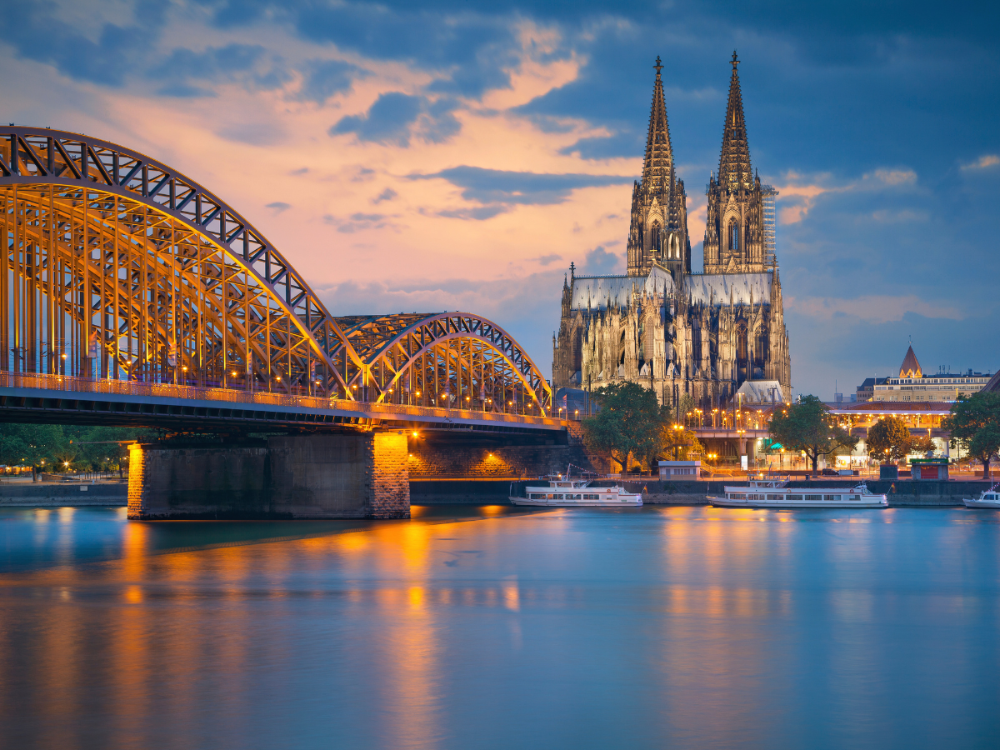

Chauffeurservice Köln für Unternehmen und Medien
Medienstadt mit großen Messen am Rhein. Vom Flughafen Köln/Bonn bis zum Messegelände bringen wir Sie zuverlässig ans Ziel.
Medienstandort mit großen Messen
Köln ist Sitz großer Medienunternehmen wie RTL und WDR und zugleich einer der bedeutendsten Messestandorte Deutschlands. Produktionsteams, Messegäste und Geschäftsreisende haben oft enge Zeitfenster, in denen jede Minute zählt.
Was den Chauffeurservice in Köln ausmacht
Flughafen Köln/Bonn (CGN)
Der Flughafen liegt südöstlich der Stadt, die Fahrt in die Innenstadt dauert in der Regel etwa 20 Minuten.
Messe Köln
Gamescom, Anuga und die imm cologne gehören zu den größten Messen der Stadt. Während dieser Veranstaltungen koordinieren wir Fahrten zwischen Hotels, Messegelände und Flughafen.
Medienstandort
RTL Group und der Westdeutsche Rundfunk haben ihren Sitz in Köln. Produktionsfirmen und Medienschaffende gehören zu unseren regelmäßigen Kunden, oft mit kurzfristigem Buchungsbedarf.
RheinEnergieStadion
Bei Konzerten und Großveranstaltungen im Stadion übernehmen wir Transfers für Gäste und Künstlerteams.
Darauf verlassen sich unsere Kunden in Köln
Kurzfristige Verfügbarkeit
Für Medienproduktionen mit spontanen Terminwechseln stellen wir Fahrzeuge oft innerhalb weniger Stunden bereit.
Messeerfahrung
Insbesondere während der Gamescom mit hohem Besucheraufkommen kennen wir die besten Routen zum Gelände.
Diskretion
Für Künstler, Führungskräfte und Gäste, die nicht auffallen möchten.
Zuverlässigkeit am Rhein
Ortskenntnis auch bei Sperrungen durch Veranstaltungen und Konzerte in der Innenstadt.
Die passende Klasse für jeden Termin
Für Produktionsteams und Messegruppen steht die V-Klasse bereit, für Einzelgäste die First Class oder Business Class.
Alle Fahrzeugklassen ansehenHäufige Fragen zum Chauffeurservice in Köln
Etwa 20 Minuten, je nach Verkehr auch etwas länger.
Ja, während der Gamescom richten wir zusätzliche Kapazitäten für Transfers zwischen Hotels und dem Messegelände ein.
Ja, kurzfristige Buchungen und Diskretion gehören bei diesen Kunden zum Alltag.
Ja, bei Konzerten und Events übernehmen wir Transfers für Gäste und Teams.
Chauffeurservice in Köln buchen.
Schildern Sie uns Ihren Termin, wir stellen den passenden Fahrer und das passende Fahrzeug bereit.